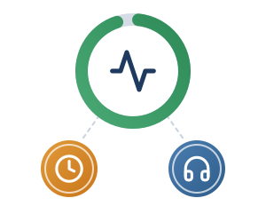

Scuola, fornitori e contratti · 3 di 3

Disponibilità, tempi di ripristino e helpdesk: tutto scritto nel contratto
Inquadramento normativo
- D.M. 166/2025, par. 3.1 e 3.2: «accordi chiari con i fornitori dei sistemi di IA, definendo il livello dei servizi di assistenza, manutenzione e le modalità di risoluzione di eventuali problemi»; verificare le qualificazioni (es. AgID per i SaaS, ISO/IEC 27001).
- AI Act, art. 25, par. 4 e Cons. 88: accordi scritti lungo la catena del valore su capacità, accesso tecnico, manutenzione e assistenza.
- CAD (D.Lgs. 82/2005), art. 50-bis e Linee guida AgID: livelli minimi di servizio per la continuità operativa e la gestione delle emergenze.
Esempio: la griglia di SLA nel contratto
Service Level Agreement concordato tra scuola e fornitore
99,5%Disponibilità (uptime)Su base mensile, a garanzia della fascia scolastica 8:00–18:00.
1 h · 4 hGuasto bloccantePresa in carico entro 1 ora; ripristino o soluzione temporanea entro 4 ore.
HelpdeskCanale dedicatoTicketing e telefono per Animatore Digitale e team dell’innovazione.